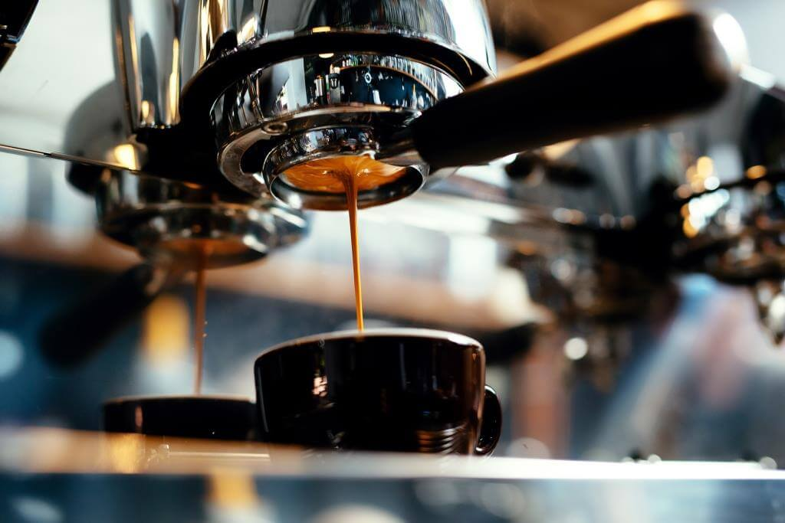

Еспресо
У перекладі з італійської назва напою означає «зварений під пресом» і пояснює спосіб його приготування. Еспресо має середню міцність, його заварюють в кавомашині під сильним тиском гарячої води, температура якої не має перевищувати 95°. Для цього напою традиційно використовується середній режим помелу. У результаті швидкої взаємодії з малою кількістю води еспресо набуває яскравого смаку й аромату. Подають його у філіжанках по 30–35 мл. Пити рекомендується невеликими ковтками й не пізніше, ніж за хвилину після приготування.
Американо

Найпопулярніший різновид еспресо, який випадково винайшли в Італії після Другої світової війни. Американо є традиційним еспресо, розведеним гарячою водою. На 30 мл кави використовують близько 120 мл рідини.
Допіо

Подвійний еспресо — класичний варіант ароматного напою в подвійній порції.
Лате
Ніжний кавовий коктейль з еспресо з молоком у пропорції 1:1. В Італії для його приготування використовують сорт кави мока. Як правило, подається лате в скляних айріш-келихах або в білих чашках.
Капучіно

Це збите молоко, молочна пінка й еспресо в рівних пропорціях. У професійних кавомашинах молоко збивається за допомогою тиску пари. Якщо використовувати прозору чашку, то в приготованому капучино має бути чітко видно три різнокольорові шари.
Глясе
Охолоджене еспресо або американо, у чашку з яким кладуть кульку вершкового морозива.
Флет-вайт
Вигаданий новозеландським бариста напій, який має яскраво виражений смак і ніжний аромат молока. Готується на основі 60 мл еспресо з гарячим спіненим молоком. Вершкова шапка — не більш як півсантиметра
Раф кава
Коктейль із еспресо зі збитими вершками та ванільним сиропом.